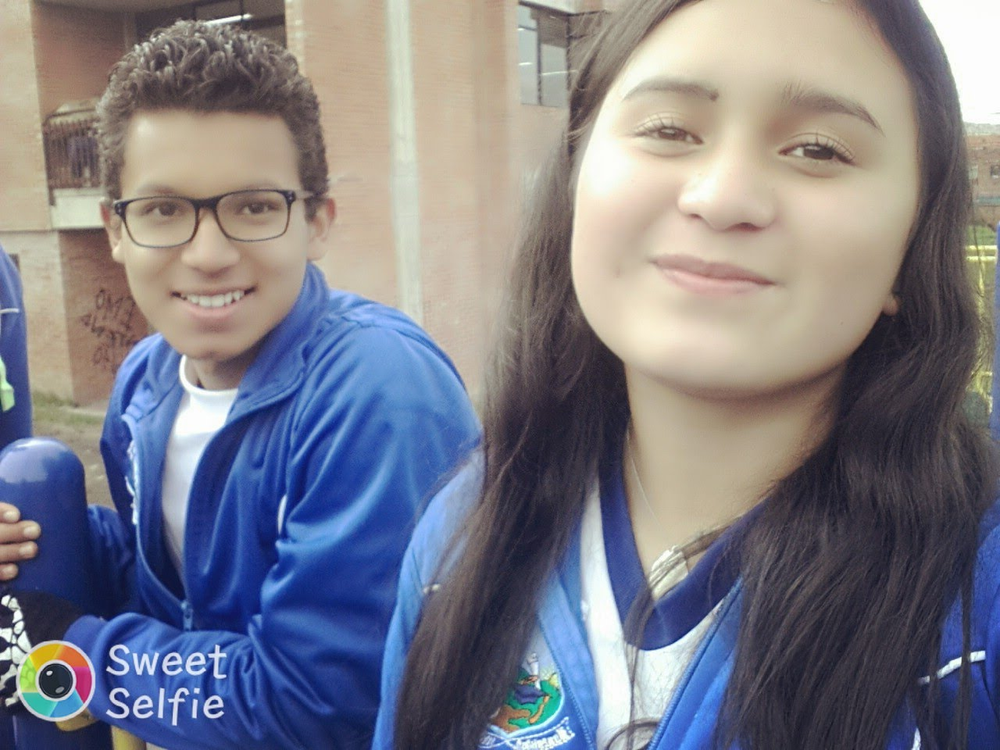
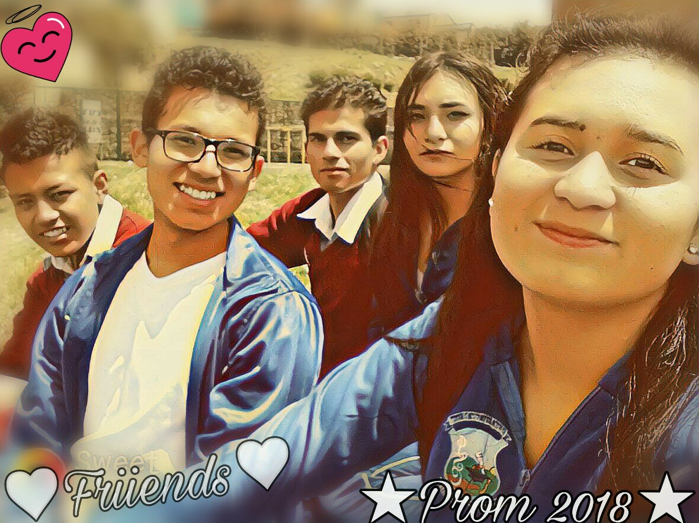
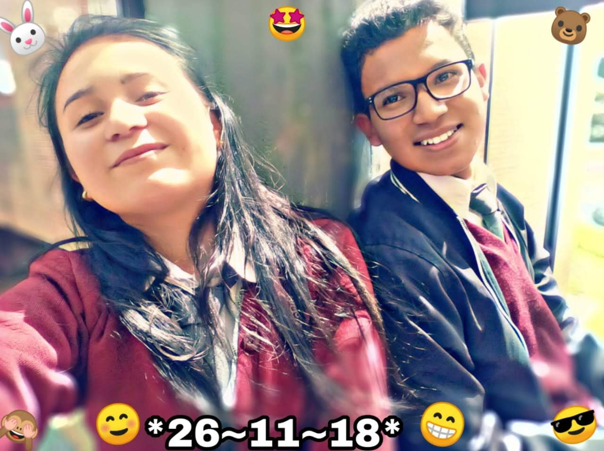

20~03~2018
Era nuestro ultimo año en el colegio, parecia mentira que aquellos chicos que se conocieron cuando eran pequeños, ahora estaban a un paso de terminar la bella etapa del cole. Él, un joven de 16 años y ella una chica de 15 jugaban siempre en todas las clases, no se cansaban de molestar y hacerse buylling mutuamente. Ambos siempre tuvieron una gran pasion por el futbol, a ella en especial le gustaba mucho como jugaba Ronaldinho y él con la intencion de impresionarla se esforzaba por mejorar su tecnica, a pesar de no ser muy habil con el balon. Jugaban y jugaban, practicamente eran dos jovenes sin ninguna preocupacion, divirtiendose y molestandose sin importar que los demas los notaran. Eso si, ella era muy amante a las fotos y practicamente obligaba al pobre muchacho a tomarse fotos con ella :'v, jaja ok, a lo mejor a él tambien le gustaba tomarse esas fotos, porque sabia que todo lo que estaba viviendo, algun dia llegaria a su fin y por lo tanto debia de disfrutar cada momento junto a ella...

27~07~2018
... A la mitad del año, llego una noticia que sorprendio a los dos, el joven se habia ganado una beca para empezar a estudiar en la universidad, pero, esto significaba que ya no iban a volver a divertirse como antes, pues bien, él, ahora iria a un lugar muy diferente al colegio y ella se quedaria, aunque pareciera un momento triste, ambos lo tomaron de la mejor forma y el ultimo dia que estuvo el chico en el colegio, se divirtieron como si fuera la ultima vez que fueran a ver, se tomaron muchas fotos hasta el punto que recrearon a los del titanic xD jajaja fue muy divertido, aun asi, cuando sono la campana sabian que habia llegado la hora de despedirse, fue muy curioso que ninguno hubiera llorado, al parecer cada uno trataba de hacerse fuerte, aunque en sus pensamientos hubiera algo de tristeza, de esta forma ese viernes 27 de Julio fue la ultima vez que se vieron como compañeros de salon. El lunes ella llego al colegio y aunque tenia a sus amigas cerca, sentia que le faltaba algo, (la cartuchera porque le habia hecho tamal xD) y él con muchos nervios afronto su destino de ir a la universidad para empezar a vivir nuevas experiencias...

26~11~2018
... Finalizando noviembre el chico regreso, pero algo habia cambiado en él, ya no se reia como antes y cuando la chica vino con mucha alegria a saludarlo, él la saludo como cualquier otra persona. Asi fue de indiferente los primeros dias, pero poco a poco la chica fue logrando que él volviera a reir y molestar con ella como lo hacian en un principio, el ultimo dia que estuvieron en el colegio, un 26 de noviembre, se quedaron hasta tarde, practicamente fueron los ultimos en salir del colegio y solo se quedaron hablando sobre las nuevas cosas que vendrian para cada uno en un futuro, ella tenia la plena conviccion que queria ser enfermera, mientras que el chico aun no sabia que queria estudiar :'v, en fin, prometieron apoyarse el uno al otro aunque ya no estuvieran en el mismo lugar y se desearon muchos exitos en sus vidas, de esta forma aquella amistad se convirtio en una fuerte hermandad que perdurara por muchos años mas \(^-^)/.